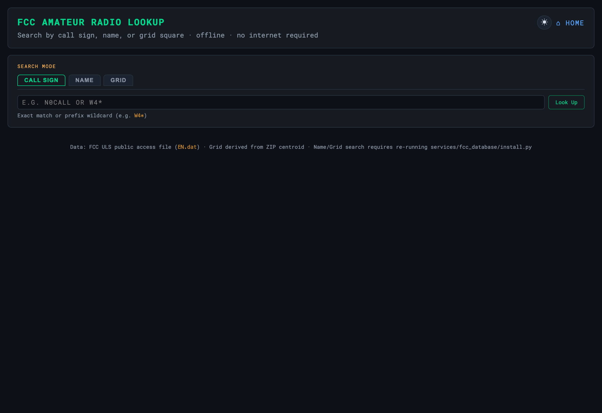

FCC Callsign Lookup
Offline U.S. amateur-licence lookup — by callsign, name, or grid

Offline lookup of U.S. amateur licences, with no database engine — a binary search over FCC flat files returns a result in well under a millisecond. Three search modes:
| Mode | Example | Returns |
|---|---|---|
| Callsign (exact) | W4MHI | A single record |
| Callsign (prefix wildcard) | W4* | Up to 50 active licences starting with W4 |
| Name | Last SMITH, first JOHN (optional) | Up to 50, prefix match on last name |
| Grid | CN87 or CN87XN (2–6 chars) | Up to 100 records in that grid area |
Results include callsign, name, city, state, and Maidenhead grid.
Building the database (online, one-time)
python3 services/fcc_database/install.py # download + build all indexes
python3 services/fcc_database/install.py --index-only # rebuild indexes from existing EN.dat
Run it on any machine with internet, then copy the data/ folder to the Pi
(or run it on the Pi if it has internet). FCC publishes fresh data every Sunday.
How it works
HD.dat identifies active licences; EN.dat holds the entity
records. Three sorted indexes point into EN.dat: a primary index by
callsign, a secondary by last name, and a third by 6-char Maidenhead grid — all
driven by the same binary-search engine. Only active licences are indexed.
Grid squares are ZIP-centroid derived. The FCC database stores ZIP codes, not GPS coordinates, so a grid can be several miles from the operator’s actual location. Name and grid search require the zipcodes.csv that services/fcc_database/install.py generates.
Troubleshooting
| Symptom | Cause & fix |
|---|---|
| Search returns nothing | The database isn’t installed. Build it once online: python3 services/fcc_database/install.py (it is gitignored, not in the repo). |
| Name or grid search is empty but call-sign works | Those modes need the ZIP-centroid / name index built by the installer — re-run it. |
| Lookups feel slow | The index may be on slow storage. It is a binary-search flat file — keep it on the SD card or an SSD, not a network mount. |